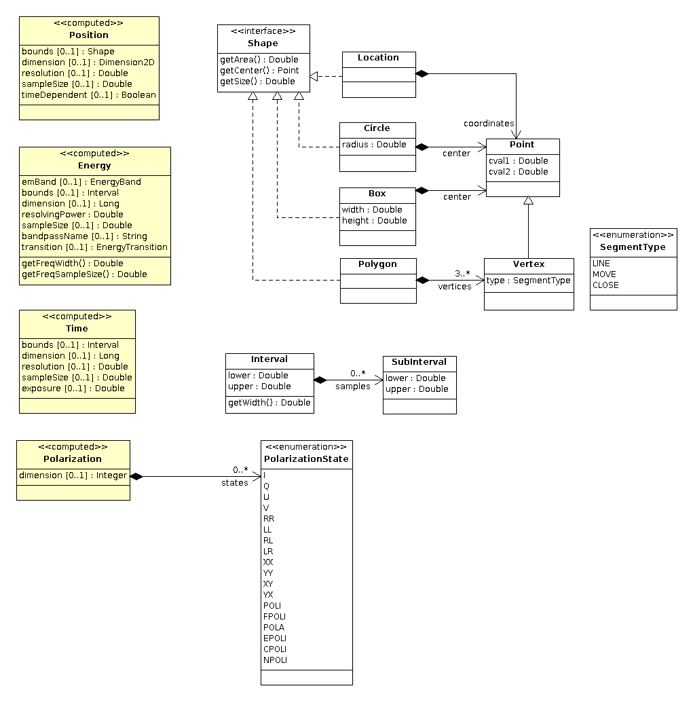
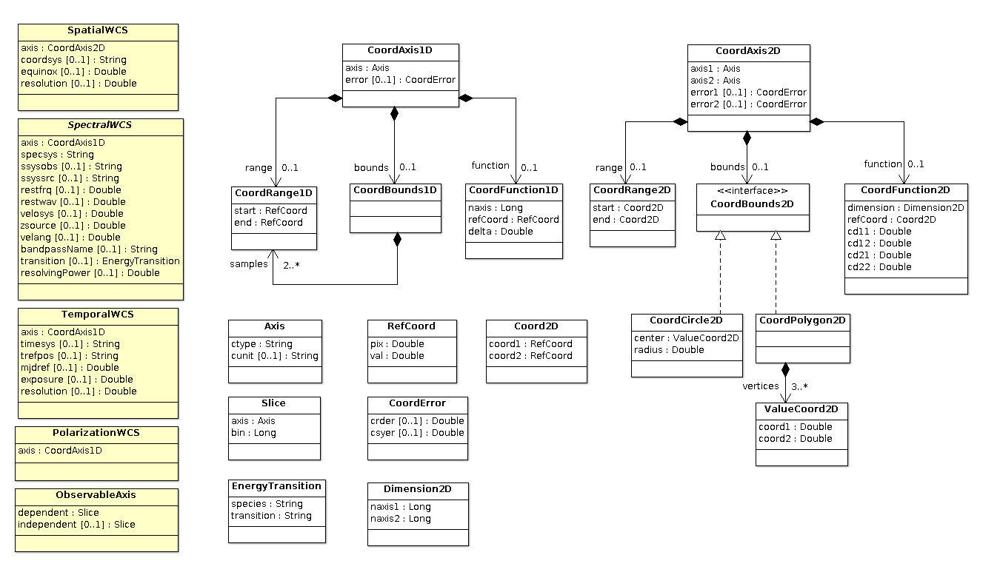
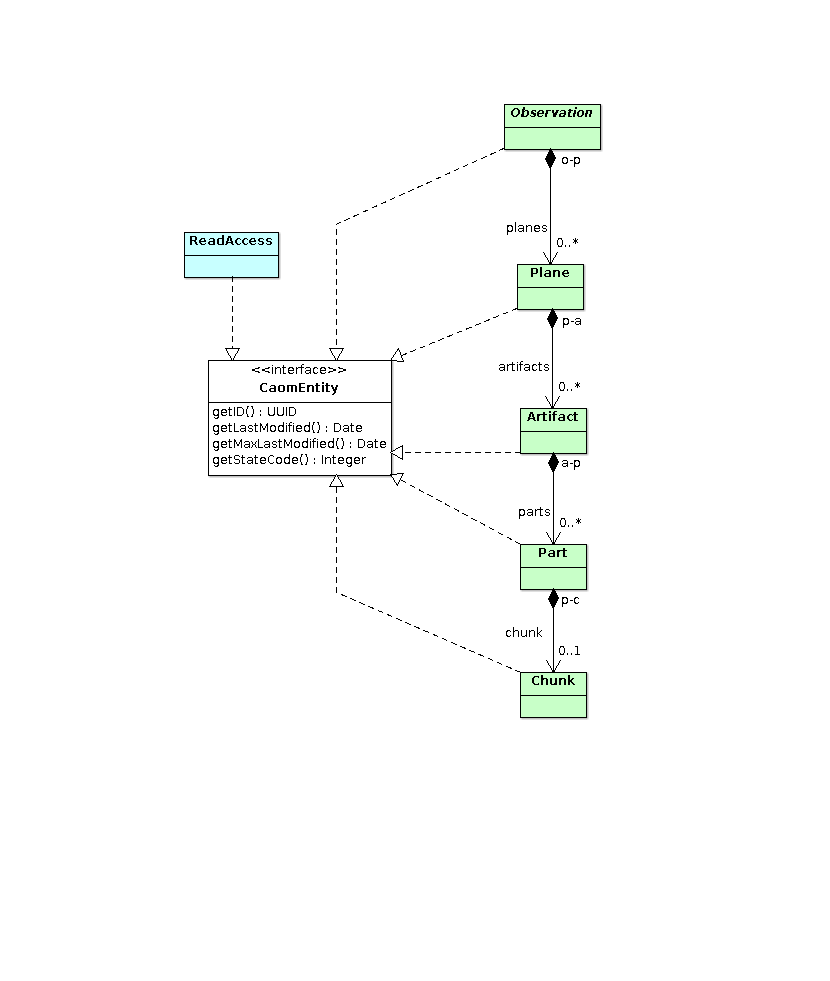

Common Archive Observation Model (CAOM-2.2)
The Common Archive Observation Model (CAOM) is a general purpose data model for use as the core data model of an astronomical data centre. The purpose of this model is to standardize the core parts of every archive implementation so that a common set of software tools can be used across archives. This set of tools includes simple data access mechanisms (web pages), discovery agents, advanced query capabilities (typically as IVOA web services), and advanced applications. In addition, we have implemented CAOM in a cross-archive data warehouse which will hold metadata for all public and proprietary data; the common model is used within the data warehouse and thus defines the portion of the archive database that is available through all applications.
While the previous version (CAOM-1.0) was very successful in enabling the CADC to serve a wide variety of data, some particular data structures were awkward to describe in a meaningful way. CAOM-2.0 has been developed to address such issues and cover new scenarios for data products.
CAOM-2.2 Software
| resource | description |
|---|---|
| Table Access Protocol (TAP) | a web service for ad-hoc querying, including both CAOM and the IVOA ObsCore-1.1 Data Model |
| Simple Image Access (SIA) | a web service for finding calibrated images (uses TAP and CAOM) |
| AdvancedSearch | a user interface for querying CAOM (uses TAP) |
| CAOM operations services | a set of high level web services to support use of CAOM: drill down to downloads using IVOA DataLink, cutouts on data files using IVOA SODA, get detailed metadata of a CAOM observation, get all files in a product (CAOM Plane) from a single download URL |
| CAOM observation repository | web service to support ingestion of metadadata into CAOM at CADC (requires authentication) |
| caom2 | java library for manipulating CAOM observations, including reading and writing XML documents
source code |
| fits2caom2 | java command-line tool for extracting metadata from FITS files, reads FITS file(s) and writes an XML document
source code |
| pyCAOM2 | python library for manipulating CAOM observations, including reading and writing XML documents
source code |
| caom2repoClient | python command-line tool for interacting with the CAOM observation repository, supports
get, put, update, delete (requires authentication)
source code |
| cadcWCS | java library for accessing wcslib
source code |
| wcsLibJNI | JNI binding library for wcslib
source code |
Core Classes
The core CAOM classes describe the observation, data products, and access to the physical artifacts (typically files), as well as the provenance of the data products. In addition, we also show the (loosely coupled) metadata access control classes.
The UML diagrams specify through the cardinality whether an object or field may be null or not.
- no visible cardinality means 1: the value is mandatory
- 0..1 compositions (solid black diamond at start) are equivalent to member variables; the value is optional
- n..* compositions signify a collection which is never null, but may be empty for n = 0
While there are a few methods shown in the model, these are to signify value conversions (e.g. wavelength to frequency) that require access to other internal fields; this is a reminder/hint to persistence implementations that the values returned from methods should also be stored for efficient querying (for example, by the TAP service).

Changes
- 2016-04-07 (red outline): made Artifact.productType mandatory; added mandatory Artifact.releaseType
- 2014-11-18: added Observation.requirements with a Status flag; added Plane.qualityFlag; moved all vocabularies (enumerations) a separate diagram (below)
- 2014-02-10: added restwav (observed rest wavelength) to computed plane energy metadata
- 2013-11-26: added moving flag to Target class, added TargetPosition class
- 2013-09-08: added PolarizationState literals: POLI (polarized intensity), FPOLI (fractional polarized intensity), POLA (linear polarized angle), EPOLI (elliptical polarized intensity), CPOLI (circular polarized intensity), and NPOLI (non-polarized intensity)
- 2013-06-18: added CATALOG, NOISE, and WEIGHT as additional ProductType literals (used to all be classified as AUXILIARY)
- 2012-11-20: added timesys, trefpos, and mjdref to TemporalWCS (from the draft FITS TimeWCS paper); time values in the CoordAxis1D are still restricted to MJD only as they are numbers and and we would need another field to allow JD; if mjdref is null, the values are absolute (otherwise they are relative to mjdref)
- 2012-07-31: renamed DataProcess to Provenance, changed Plane.position.timeDependent to be a Boolean (null allowed)
- 2012-06-20: removed partName - partNumber distinction and just use a required Part.name field
- 2012-06-20: made Observation.target.type optional, removed ProcessMetaReadAccess since provenance is now part of one plane (access is controlled by PlaneMetaReadAccess), added Observation.type (typically OBSTYPE from FITS) and Observation.intent (science or calibration)
- 2012-06-07: removed Plane.observable since it is not sensible to summarise multiple Chunk.observable values and chunks with one observable will usually leave it blank
- 2012-03-26: added various ASMD fields, refactored Metric to be a fixed set of Plane.metrics.* fields
- 2012-03-15: added cardinality to keywords fields to show they are lists of strings
changed Plane.observable to have a simple name and units instead of re-using Axis
removed Target.position field - 2012-02-17: change Plane.dataType to Plane.dataProductType
-
2012-02-15: Refactored provenance to be a single class owned by and characterising a single plane
made Metric.error a field (nullable), but utility of current design is under consideration
specified cardinality of keywords to be [0..*] to signify a list of strings
refactored Observable, but current design is under consideration
removed Plane.dataStatus and the DataStatus enumerated type (no use case)
refactored Part so that partName and partNumber are immutable state
- 2012-01-27: Added convenience methods to Energy to return the width of the energy bounds and the sample size in frequency (the bounds and sampleSize fields are wavelength)
All the mini-vocabularies defined in the CAOM model are shown below. More detailed definitions and actual literal values used when stored or serialised follow.

Changes
- 2016-04-07 (red outline): ; added ProductType.THUMBNAIL (subtype of preview); added ReleaseType vocabulary
- 2014-11-18: separate vocabulary (enumerations) diagram, added Status and Quality; removed ProductType.CATALOG value
Observation
An observation is the primary top-level class for empirical data. A simple observation is the result of one use or invocation of a telescope and instrument, while a composite observation is a collection of simple observations that have been combined to create a new data product. simple observations have one or more data products (planes). The metadata for an observation is concerned with describing the data acquisition: the proposal, telescope, instrument, and target. The algorithm for a simple observation is always exposure while the algorithm for a composite observation describes the semantics of the grouping or composition involved.
Enumerated type values are generally lower case strings equivalent to the names used in the model, but there are a few exceptions where numeric values or mixed-case strings from an external source are used.
| Enumeration | model field | serialised value | description |
|---|---|---|---|
| ObservationIntentType | describes the intent of the observation | ||
| SCIENCE | science | ||
| CALIBRATION | calibration | ||
| TargetType | describes the type of target (e.g. FITS OBSTYPE keyword) | ||
| OBJECT | object | ||
| FIELD | field | ||
| Status | flag to characterise the satisfaction of requirements | ||
| FAIL | fail |
Plane
A plane is one (of several) data product(s) that are created as part of an observation. Each simple observation typically has one raw plane created by the observing process itself and may have one or more additional planes that are produced by subsequent data processing. The metadata for a plane characterises the data product: the coverage and sampling in position, energy, time, and polarization, a description of the observed quantity (usually something proportional to flux). This metadata is generally computed from the artifact metadata and is used primarily in data discovery.
| Enumeration | model field | serialised value | description |
|---|---|---|---|
| CalibrationLevel | from IVOA ObsCoreDM-1.0 | ||
| RAW_INSTRUMENTAL | 0 | raw data, instrumental format | |
| RAW_STANDARD | 1 | raw data, standard format | |
| CALIBRATED | 2 | calibrated data, standard reductions appleid | |
| PRODUCT | 3 | product, advanced processing applied | |
| DataProductType | from IVOA ObsCoreDM-1.0 | ||
| IMAGE | image | ||
| SPECTRUM | spectrum | ||
| TIMESERIES | timeseries | ||
| VISIBILITY | visibility | ||
| EVENTLIST | eventlist | ||
| CUBE | cube | ||
| CATALOG | catalog | custom data product type | |
| EnergyBand | from IVOA Resource Metadata for the Virtual Observatory | ||
| RADIO | Radio | nu > 30GHz (lambda < 10mm) | |
| MILLIMETER | Millimeter | 0.1-10mm | |
| INFRARED | Infrared | 1-100um | |
| OPTICAL | Optical | 300-1000nm | |
| UV | UV | 100-300nm | |
| EUV | EUV | 10-100nm | |
| XRAY | X-ray | 0.12-120keV | |
| GAMMARAY | Gamma-ray | energy > 120keV | |
| Quality | flag data quality | ||
| JUNK | junk | this data is bad for everything |
The serialised values for Polarization (as listed in the PolarizationState type) are the identical upper case letter(s).
Artifact
An artifact is one physical product or resource (typically a file) that is part of a plane. Planes in an Observation with intent=science should always have at least one science artifact and may have other types of (associated) artifacts. Planes in an Observation with intent=calibration should always have at least one calibration artifact and may have other types of (associated) artifacts. While science Observations (with science Artifacts) could also contain calibration Artifacts, this should only be done if those calibrations are to be used with that science data only; normally science and calibration files are part of different Observations.
| Enumeration | model field | serialised value | description |
|---|---|---|---|
| ProductType | file type classification | ||
| SCIENCE | science | science data | |
| CALIBRATION | calibration | files needed to calibrate science data | |
| INFO | info | additional information file(s), usually text | |
| PREVIEW | preview | non-science quality rendition of the data for preview | |
| THUMBNAIL | thumbnail | small non-science quality rendition of the data for preview | |
| NOISE | noise | associated noise files needed for analysis | |
| WEIGHT | weight | associated weight files needed for analysis | |
| AUXILIARY | auxiliary | other associated files needed for analysis | |
| ReleaseType | artifact release permission type | ||
| DATA | data | release depends on parent Plane.dataRelease and PlaneDataReadAccess |
|
| META | meta | release depends on parent Plane.metaRelease and PlaneMetaReadAccess |
Part
A part is one qualitatively defined subsection of an artifact. For example, if the artifact is a multi-extension FITS file, it would have one part for each extension. If the artifact is a tar or zip file, it would have one part for each contained file.
Chunk
A chunk is a quantitatively defined subsection of a part. The chunk is characterised by world coordinate system (WCS) metadata plus an extra axis to describe different observables (the measured values) stored within the data. Different chunks can be defined which vary only on the range of coordinate values they include. For example, if a single data array contains different observable quantities can define a chunk for each slice through the array, with each slice having a different product type. One can also use chunks to define arbitrary tiles in a large data array; this is useful if there is no WCS solution to describe the mapping of sky to pixel coordinates but one still wants to be able to extract smaller sections of the data (e.g. one chunk).
Metric
A metric is a measured quantity that described a data product. Metrics are inherently very flexible and can be used to derive interesting and useful metadata about data products, usually by analysing the actual content and computing some aggregate information. For example, one could compute the number (or density) of point and extended sources in an image or the signal-to-noise ratio of a specific type and brightness of source. Metrics describe the content of the data product.
Provenance
The provenance of a data product describes the data processing that transformed the input(s) into the output. For example, a raw plane is processed to produce a calibrated plane using a specific recipe. This is considered provenance since the primary goal or view of this metadata is to understand how a specific plane was produced and to trace backwards from an output, through the data process, to the input(s). The complete provenance may include multiple loops until it reaches a plane which does not have a provenance: a raw plane in a simple observation.
ReadAccess and Subclasses
Access control is declared as special permission classes where the existence of instances grants read permission on instances of associated assets. In addition to the permissions, assets also include a release date (e.g. metaRelease in the Plane class) that specifies when the asset is public and permission is not required. For example, instances of the PlaneMetaReadAccess class grant read permission on the metadata held in the an instance of the Plane class (where the assetID of the permission matches the ID of the asset). Access control is implemented as a query transformation (e.g. in a TAP service) that connects the asset and the permission and allows one to implement and protect proprietary metadata within CAOM.
IVOA Publisher Dataset Identifiers
The IVOA publisher dataset identifier (publisherDID) is a Uniform Resource Identifier (URI). In CAOM, this is a reproducible, globally-unique identifier, constructed as follows:
ivo://{authority}/{collection}/{observationID}/{productID}
where the curly braces { } denote values from the model (or a registered IVOA Authority ID in the case of {authority}). Within one authority (data centre), the collection and observationID from the Observation class and the productID from the Plane class make up the publishderDID for a single CAOM data product. It is not clear exactly how one resolves a publisherDID, but what one can do is strip the path off and look up the authority in an IVOA registry and then look up specific types of IVOA services owned by that authority, such as the proposed DataLink service.
Data Types (Discovery)
The following data types are used in the computed characterisation of the Plane class to support data discovery queries.
{kind=link}
Changes
- 2013-09-08: added PolarizationState literals: POLI (polarized intensity), FPOLI (fractional polarized intensity), POLA (linear polarized angle), EPOLI (elliptical polarized intensity), CPOLI (circular polarized intensity), and NPOLI (non-polarized intensity)
- 2012-02-15: made Location contain coordinates rather than be a subclass for symmetry
- added Box datatype
- changed some fields to methods to correctly specify required and immutable state
Data Types (WCS)
The following data types are derived from FITS WCS (TODO: ref), but also include more general ability to describe coverage when per-pixel coordinate system information is not available (for example, raw data that is not in FITS format) or is not practical to store in the database (for example, non-linear spectral WCS solution stored in the data array or table of a FITS file).
{kind=link}
The PolarizationState enumeration that describes polarization of a Plane is computed from the FITS WCS description of the axis (CTYPEi=STOKES). The numeric values used in the FITS WCS representation are related to the string values following FITS WCS Paper 1 (Table 7) and some extensions extracted from a fits mailing list discusssion. The mapping is as follows:
| PolarizationState | numeric value | description/source |
|---|---|---|
| I | 1 | FITS WCS Paper 1 |
| Q | 2 | FITS WCS Paper 1 |
| U | 3 | FITS WCS Paper 1 |
| V | 4 | FITS WCS Paper 1 |
| POLI | 5 | linear polarized intensity sqrt(Q^2 + U^2), code used in AIPS |
| FPOLI | 6 | fractional linear polarization POLI/I, code used in AIPS |
| POLA | 7 | linear polarization angle 1/2 arctan(U,Q), code used in AIPS |
| EPOLI | 8 | elliptical polarization intensity sqrt(Q^2 + U^2 + V^2) |
| CPOLI | 9 | circular polarization intensity |V| |
| NPOLI | 10 | unpolarized intensity I - EPOLI |
| RR | -1 | FITS WCS Paper 1 |
| LL | -2 | FITS WCS Paper 1 |
| RL | -3 | FITS WCS Paper 1 |
| LR | -4 | FITS WCS Paper 1 |
| XX | -5 | FITS WCS Paper 1 |
| YY | -6 | FITS WCS Paper 1 |
| XY | -7 | FITS WCS Paper 1 |
| YX | -8 | FITS WCS Paper 1 |
Changes
- 2012-11-20: added timesys and trefpos to TemporalWCS (from the draft FITS TimeWCS paper); time values in the CoordAxis1D are still restricted to MJD only as they are numbers and and we would need a boolean to allow JD; example usage from draft paper: CTYPE=TIME and TIMESYS=UTC is equivalent to CTYPE=UTC and TIMESYS=null
- 2012-03-15: changed Slice to have methods that reflect immutable state
changed SpectralWCS.specsys to be a method since a value is mandatory
removed extraneous get methods from CoordAxis1D and CoordAxis2D - 2012-02-22: Changed Error class to CoordError to avoid annoying code conflict with java.lang.Error since that package is always in scope
-
2012-02-15: removed get methods from CoordAxis1D and CoordAxis2D that were utilities for
computing information and not signifying state
renamed bounds and footprint to range and bounds respectively changed CoordAxis1D.axis from field to getAxis method (not nullable) - 2012-01-27: Added support for a circular footprint (in addition to polygon) to better capture a single beam in radio data; still need to determine the impact of the use of polymorphism on persistence implementation
- changed some fields to methods to correctly specify required and immutable state
Persistence Interfaces
Once of the goals for CAOM is to enable instances of observations to be harvested to alternate databases. To support this, all CAOM entities have a unique identifier to support fine-grained updating of existing records and a last-modified timestamp to support incremental harvesting (normally only detect and harvest changed entities).
{kind=link}
Changes
- 2012-02-15: DataProcess was renamed to provenance and is no longer a distinct CaomEntity
Important Changes Since CAOM-1.0
Below are the main differences between the previous and current versions of CAOM. This is not a complete changelog, but it does try to capture the main differences.
- metadata that used to be specified for SimpleObservation or CompositeObservation is moved into the base Observation class: for simple observations these value retain the original meaning, while for composites the values simply mean that all the members had the same value (practically, CompositeObservations are almost always made from data with the same telescope and instrument and often the same target and proposal)
- the Artifact class is normalised into to three separate classes: Artifact, Part, and Chunk: Artifact is a whole thing (typically file), Part is a qualitative subsection (typically a single FITS extension), and Chunk is a quantitateivly defined subsection (typically a single row or column from a table or data array, but could be extended to support an arbitrary list of range of values if this actually occurs in reality)
- the Metric class is a part of the plane with specific metrics defined
- WCS classes are no longer entities that can be shared by multiple Artifacts
- add support for non-science artifacts to be included within a plane instead of as separate, related planes
- added an ObservableAxis to support cases where different quantities are stored in different sections of a data array: the use cases that drive this also require the Chunk and typically each Chunk is a different observable slice in the data array, but it could be used as a tiling mechanism
- integrated provenance model
- integrated metadata access control model
- renamed the permanent observation identifier from collectionID to observationID
- added a permanent product identifier (productID) to the Plane class
- expanded the WCS classes to include less detailed characterisation when a complete WCS solution is not available or practical
- added <<computed>> stereotype so that computed (aggreggate) metadata was clearly marked
- made the rules for specifying whether null values are allowed or not follow clearly from the model